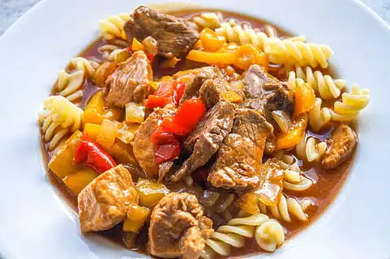

Guiso

Ingredientes:
3 dientes de ajo
1 cebolla
1/2 morrón
1 tomate
Pulpa de tomate o pimentón
300g de carne vacuna
2 zanahorias
3 papas
Sal, pimienta, condimentos
Preparación:
Para el relleno:
En una olla grande rehogar con un chorro de aceite el ajo, la cebolla y el morrón.
Cuando la cebolla esté transparente agregar el tomate picado y la carne cortada en cubos.
Salpimentar y condimentar a gusto.
Cuando la carne esté cocida agregar el pimentón o la pulpa de tomate.
Ir agregando agua caliente a medida que se evapore y revolver.
Rallar una zanahoria y picar en cubos la otra, agregar.
Por último cortar la papa en trozos, agregar y cubrir con agua caliente, revolviendo de vez en cuando.
Cuando las verduras estén cocidas agregar 1 taza de arroz o dos tazas de fideos.
Cuando el arroz o los fideos estén listos retirar del fuego. Dejar reposar unos minutos y servir.